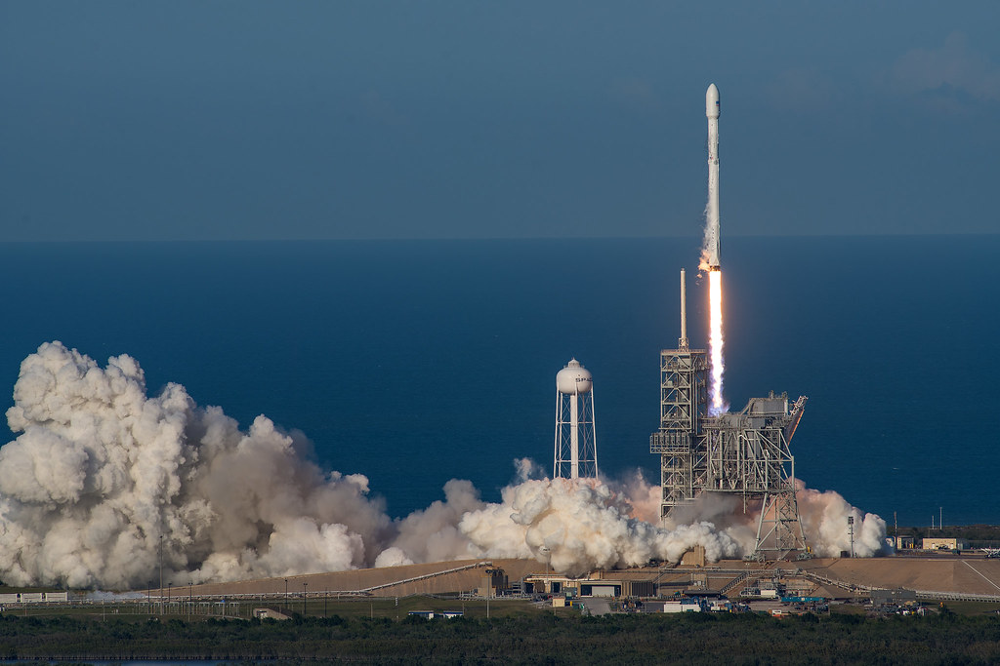
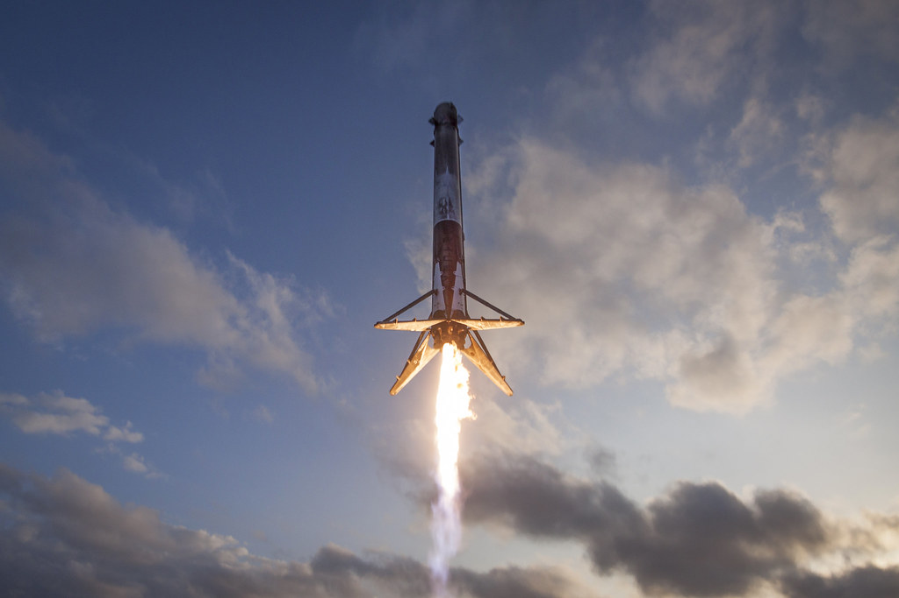
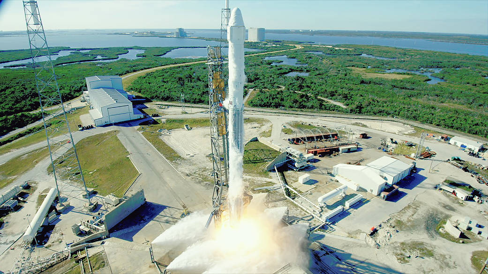

Storia SpaceX · Quattordicesima parte · 2017
2017: SpaceX decolla davvero
Non si limita a riprendersi da AMOS-6. Un primo stadio torna a lanciare un satellite e atterra ancora; Dragon compie un secondo viaggio; le missioni si susseguono a un ritmo nuovo. Il riutilizzo comincia a diventare un modo di lavorare.
Indice Storia SpaceXTornare al punto di prima non basta
All'inizio del 2017 SpaceX ha un compito immediato: tornare a lanciare senza perdere un altro razzo. AMOS-6 ha distrutto un satellite, fermato le missioni e lasciato una rampa da ricostruire. I clienti hanno bisogno di date credibili; la NASA di rifornimenti; l'azienda di dimostrare che l'indagine e le modifiche hanno prodotto qualcosa di concreto. Il primo successo dell'anno deve anzitutto rispondere a queste esigenze, non inaugurare una celebrazione.
Il 14 gennaio il Falcon 9 parte da Vandenberg con dieci satelliti Iridium NEXT. La consegna in orbita riesce. È il ritorno al lavoro di un fornitore dal quale dipende il rinnovo di un'intera rete di comunicazioni, non soltanto il sollievo di vedere un razzo salire. Il cliente può finalmente cominciare a mettere in servizio la nuova costellazione. [1]
Il 19 febbraio CRS-10 inaugura i lanci SpaceX dalla rampa 39A. Il luogo appartiene alla storia di Apollo e dello Shuttle, ma ora deve servire un'attività diversa: ricevere razzi, prepararli, farli partire, liberare spazio per la missione successiva. L'eredità del passato è importante; altrettanto importante è che quell'impianto funzioni nel presente, mentre SLC-40 non è ancora disponibile. [2]
Questi due voli sono già raccontati nel capitolo su AMOS-6. Qui interessano per ciò che rendono possibile dopo. Se SpaceX si fosse fermata a una ripartenza ordinata, il 2017 sarebbe stato un anno di recupero. Invece comincia qualcosa di più: l'azienda non torna semplicemente alla situazione precedente, ma porta in volo una capacità nuova e accelera la propria attività. La parola «decolla», questa volta, descrive anche la sua storia industriale.

.jpg){kind=link}
Un razzo recuperato deve dimostrare di saper lavorare ancora
Il primo atterraggio terrestre del dicembre 2015 aveva dimostrato che un primo stadio poteva tornare integro. Nel 2016 era arrivato anche il successo sulla piattaforma in mare. Erano risultati enormi, costruiti attraverso tentativi che non sempre si erano conclusi bene. Ma fra il recupero e il riutilizzo restava una distanza decisiva: un razzo in piedi non era ancora un razzo pronto a trasportare un altro carico.
Bisognava capire in quali condizioni fosse tornato. Un primo stadio attraversa vibrazioni, carichi, variazioni di temperatura, accensioni e rientro atmosferico. Recuperarlo consente di esaminarlo, ma l'ispezione non può essere una semplice occhiata alla vernice. La domanda riguarda ciò che ha resistito, ciò che deve essere controllato e ciò che deve essere sostituito prima di assumere una nuova responsabilità.
C'è poi il cliente. Per chi possiede un satellite, il razzo è il mezzo necessario a raggiungere il luogo nel quale quel satellite potrà lavorare per anni. Il primato del lanciatore non compensa la perdita del carico. La proposta di usare un primo stadio già volato deve quindi diventare convincente anche fuori da SpaceX, dove entusiasmo per l'innovazione e prudenza commerciale devono trovare un accordo.
È questo il passaggio che rende SES-10 diverso da un collaudo senza passeggeri né merci. In cima al Falcon c'è un satellite operativo, costruito da Airbus per fornire servizi di comunicazione all'America Latina. La missione ha un lavoro da svolgere e un cliente che aspetta il risultato. Non basta che il booster sopravviva alla propria seconda accensione. [3]
SES accetta di essere la prima
SES non decide di tentare il riutilizzo soltanto dopo avere visto SpaceX uscire dalla crisi. L'accordo viene annunciato nell'agosto 2016, prima dell'incidente di AMOS-6. Nei risultati del terzo trimestre, l'operatore ribadisce la scelta e lega il riuso a una maggiore efficienza dei costi e della gestione del calendario. L'interesse non è soltanto partecipare a un evento storico: è rendere il trasporto spaziale meno rigido. [4]
Questo dettaglio evita una ricostruzione troppo facile. Non c'è prima il disastro, poi una fortunata invenzione capace di cancellarlo. Il lavoro sul riutilizzo era già avviato; AMOS-6 lo interrompe e complica l'attività nella quale avrebbe dovuto inserirsi. La ripartenza permette di riprendere anche quel percorso, con il peso aggiuntivo di dover dimostrare affidabilità dopo un'altra perdita.
Il booster scelto per SES-10 aveva portato in volo CRS-8 nell'aprile 2016 ed era stato il primo Falcon 9 ad atterrare con successo su una piattaforma in mare. Ora la sua storia deve continuare. La macchina che aveva reso possibile uno dei momenti più emozionanti del programma non viene conservata soltanto come testimonianza: torna sulla rampa con un altro compito. Il dossier SpaceX per SES-10 indica esplicitamente la precedente missione CRS-8. [5]
Dire «già volato» non equivale a dire «utilizzabile senza altri controlli». Ma cambia il punto di partenza. Una parte del razzo non è più un oggetto conosciuto soltanto attraverso prove a terra e calcoli: ha affrontato una missione reale, ed è tornata per essere esaminata. L'esperienza del volo entra nel lavoro sul veicolo stesso.
30 marzo: il secondo decollo
Il 30 marzo 2017 il Falcon 9 con SES-10 lascia la rampa 39A. Il primo stadio ha già fatto questo viaggio una volta, ma la sequenza deve riuscire di nuovo: accensione, salita, separazione. Il secondo stadio prosegue verso l'orbita di trasferimento geostazionario, mentre il booster comincia il ritorno verso la piattaforma Of Course I Still Love You. La missione del satellite e quella del recupero procedono ormai lungo traiettorie separate.
È importante chiamare il risultato con precisione: viene riutilizzato il primo stadio di un razzo orbitale, non un intero Falcon 9. Il booster non aveva raggiunto l'orbita nel primo volo e non la raggiunge nel secondo. Il secondo stadio resta a perdere. Il primato non cancella neppure la storia dello Shuttle o quella dei veicoli suborbitali riutilizzabili: riguarda questo tipo di primo stadio e il suo impiego in un nuovo lancio orbitale.
La distinzione non toglie nulla al momento. Per anni il razzo recuperato era stato una promessa, poi una dimostrazione di atterraggio, infine un oggetto da studiare. Ora sta nuovamente facendo il mestiere per il quale era stato costruito. La parte più grande del lanciatore, con i suoi nove motori, non viene fabbricata da capo per questa missione.
Il filmato ufficiale permette di seguire quel cambiamento senza ridurlo a una fotografia del decollo. Si vede il lavoro procedere fase dopo fase; l'esito non è tutto contenuto nel momento in cui il razzo si stacca dalla rampa. SES-10 deve essere consegnato alla traiettoria prevista, e il primo stadio deve ancora superare il rientro. La registrazione conserva la sequenza del lancio e del recupero. [6]

.jpg){kind=link}
L'emozione del secondo atterraggio
Il ritorno ha una forza particolare proprio perché non è il primo. Nel 2015 l'emozione era stata vedere che un razzo poteva arrivare in piedi a terra. Nel 2016, vedere che poteva farlo anche in mare. Adesso l'attesa contiene una domanda in più: può resistere a un altro lancio e tornare ancora?
Il booster scende verso l'Atlantico, rallenta, apre le gambe e atterra sulla piattaforma. La fotografia del recupero mostra il motore acceso e lo stadio già segnato dal lavoro compiuto. Non è una macchina mai usata, bianca e appena uscita dalla fabbrica. È lo stesso mezzo che ha attraversato un primo viaggio, è stato preparato per il secondo e sta concludendo anche quel ritorno.
Qui l'entusiasmo ha una ragione tecnica precisa. Il riutilizzo non ha richiesto di sacrificare il razzo alla fine della seconda missione. Il ciclo può proseguire almeno come possibilità di progetto: partenza, recupero, nuova partenza, nuovo recupero. La consegna riuscita del satellite completa il risultato commerciale; l'atterraggio aggiunge un'altra risposta alla domanda sul veicolo.
Per chi aveva seguito i tentativi finiti in esplosioni sulle piattaforme, quel ritorno dà anche un altro significato alle immagini degli anni precedenti. Non rende piacevoli le perdite e non le trasforma automaticamente in successi. Mostra però che la sperimentazione non era rimasta un esercizio separato dal lavoro. Aveva costruito una capacità che ora veniva usata per portare in orbita un satellite vero.
C'è una gioia particolare nel vedere riuscire proprio ciò che per anni è sembrato il passaggio più incerto. Prima si aspettava il razzo sulla piattaforma chiedendosi se sarebbe rimasto in piedi. Adesso la domanda comprende il viaggio successivo. La promessa non riguarda più soltanto il rientro: un primo stadio ha lavorato due volte, ed è tornato due volte.

.jpg){kind=link}
SES-10, nella diretta originale
Diretta originale sul canale ufficiale SpaceX. Video incorporato, non scaricato o ripubblicato.
La prova è riuscita; l'economia deve ancora maturare
SES-10 non dimostra che l'accesso allo spazio sia diventato improvvisamente economico quanto un viaggio in aereo. Fra CRS-8 e il nuovo lancio trascorre quasi un anno. Il lavoro di verifica e preparazione ha richiesto tempo; il secondo stadio resta da costruire; la missione ha comunque costi di personale, impianti, prove, logistica e operazioni.
Il vantaggio cercato è più concreto: evitare di ricostruire a ogni volo una parte importante del veicolo. Quanto quel vantaggio valga dipende dal costo del recupero, dalla manutenzione, dalla durata utile del booster e dal numero di volte in cui potrà essere impiegato. Un secondo volo riuscito apre la strada a queste verifiche. Non fornisce da solo il bilancio definitivo del programma.
Conviene distinguere anche il costo sostenuto da SpaceX dal prezzo pagato da un cliente. Non sono la stessa cosa. Un eventuale risparmio industriale può servire a ridurre il prezzo, finanziare sviluppo, aumentare il margine o rendere più sostenibile il servizio. Senza conoscere contabilità e condizioni dei singoli contratti, attribuire a SES-10 una percentuale precisa di risparmio sarebbe raccontare più di quanto possiamo documentare.
Il cambiamento del 2017 sta nel fatto che il problema diventa misurabile su hardware reale. Prima bisogna dimostrare di poter volare di nuovo; poi ridurre i lavori necessari, imparare quali componenti richiedono attenzione e costruire versioni più adatte a ripetere il ciclo. Il primo successo non è la fine del percorso. È il momento in cui il percorso smette di dipendere soltanto da una previsione.
Non un solo giorno straordinario: un anno che accelera
Se il 2017 contenesse soltanto SES-10, sarebbe comunque un anno importante. Ma la svolta sta anche nel calendario. SpaceX chiude l'anno con diciotto lanci Falcon 9 riusciti, cinque dei quali effettuati con primi stadi già volati. I tentativi di atterraggio sono quattordici e riescono tutti. Sono dati riepilogati da Hans Koenigsmann, responsabile SpaceX per costruzione e affidabilità del volo, nella testimonianza al Congresso del gennaio 2018. [7]
Quattordici recuperi non significano che tutti i diciotto razzi siano stati riportati a terra. Alcune missioni non prevedono un atterraggio. E cinque riutilizzi non significano cinque voli dello stesso booster: significano cinque lanci nei quali il primo stadio aveva già volato. Separare queste grandezze aiuta a capire ciò che sta accadendo, invece di sommare primati diversi come se fossero un unico numero.
Il confronto con il 2016 è netto: allora i decolli erano stati otto. AMOS-6 era una perdita a terra, prima del lancio, e non va aggiunto al numero dei decolli. Nel 2017 SpaceX supera quindi di molto il ritmo precedente. Il calendario delle missioni permette di controllare il conteggio: qui si conta il volo del lanciatore, non il numero dei satelliti trasportati. Dieci satelliti Iridium sullo stesso Falcon restano un lancio. [8]
Non bisogna attribuire tutta l'accelerazione al riutilizzo. Tredici dei diciotto voli partono ancora con primi stadi nuovi. Contano la produzione, i test, le squadre, la disponibilità delle rampe e la gestione delle campagne. Recuperare hardware non risolve da solo un problema di rampa o di calendario. La crescita è il risultato di un'attività che comincia a sostenere più missioni, mentre introduce il riuso senza aspettare che tutto il resto sia già perfetto.
È questo il nuovo slancio. Dopo una crisi si potrebbe immaginare un'azienda costretta a scegliere fra consolidare il servizio e tentare qualcosa di nuovo. Nel 2017 SpaceX fa entrambe le cose. Aumenta i voli e introduce una capacità che, negli anni successivi, potrà rendere quell'aumento più sostenibile. Il riuso non è ancora la spiegazione completa del ritmo; sta diventando una delle condizioni della crescita futura.
Due coste, due lanci nello stesso fine settimana
Il 23 giugno BulgariaSat-1 parte dalla Florida. Il 25 giugno un altro Falcon 9 decolla da Vandenberg con il secondo gruppo di dieci Iridium NEXT. Fra i due lanci trascorrono circa quarantanove ore. Non è un'unica rampa capace di ripartire dopo due giorni: sono due campagne, su coste opposte degli Stati Uniti, portate al lancio a distanza ravvicinata. [9] [10]
La differenza è importante. Il risultato mostra la capacità di gestire lavori paralleli, non un primato di preparazione dello stesso impianto. In Florida si serve un cliente di telecomunicazioni; in California si porta avanti la costruzione di una costellazione. Per i clienti, il valore sta nella possibilità di trasformare contratti e attese in servizi effettivi.
Il riuso, intanto, non resta confinato a SES-10. Le cinque missioni dell'anno con un primo stadio già volato sono SES-10, BulgariaSat-1, SES-11/EchoStar 105, CRS-13 e Iridium NEXT-4. Cambiano clienti e destinazioni; il metodo comincia ad allargarsi. Non siamo ancora alla lunga carriera dei booster degli anni seguenti, ma il secondo volo non appartiene più a un solo esemplare scelto per una sola occasione.
Ripetere il risultato è ciò che gli dà peso industriale. Un'impresa isolata può essere eccezionale e restare difficile da riprodurre. Una serie di missioni riuscite obbliga invece a guardare il riutilizzo come una capacità da organizzare: scegliere il veicolo, ricostruire la sua storia, prepararlo e assegnargli un altro carico. L'atterraggio continua a essere spettacolare; dietro di esso, però, si sta formando un lavoro meno visibile.
Anche Dragon riparte
Il riuso del 2017 non riguarda soltanto i primi stadi. Il 3 giugno CRS-11 porta alla Stazione Spaziale Internazionale una Dragon che aveva già compiuto CRS-4 nel 2014. La missione raggiunge la ISS il 5 giugno. Non è il primo riutilizzo di una navicella nella storia dell'astronautica, ma è il primo ritorno in volo di una Dragon. [11]
Capsula e booster non affrontano gli stessi problemi. Dragon raggiunge l'orbita, rimane nello spazio, rientra nell'atmosfera e conclude il viaggio con un ammaraggio. Il primo stadio torna molto prima, lungo una traiettoria diversa, e atterra usando i motori. Metterli sotto la stessa parola, «riutilizzo», non significa che basti applicare all'uno la procedura dell'altra.
Non bisogna neppure intendere una Dragon riutilizzata come l'intero veicolo rimesso sulla rampa senza interventi. La capsula viene preparata e ricondizionata; gli elementi a perdere del sistema non diventano riutilizzabili per il solo fatto che la parte rientrata abbia già volato. Il passo avanti sta nel recuperare una struttura spaziale capace di svolgere un'altra missione, dentro un processo verificato per il servizio richiesto.
La presenza della NASA dà a questo passaggio un significato ulteriore. Non è soltanto un'azienda che espone la propria fiducia nel progetto. Un cliente istituzionale affida di nuovo alla capsula materiali, esperimenti e rifornimenti destinati a un laboratorio abitato. Il successo commerciale e quello tecnico devono coincidere: la navicella non torna nello spazio per mostrare che può farlo, ma per consegnare qualcosa di necessario.
Dicembre: il riuso torna sulla rampa di AMOS-6
Il 15 dicembre CRS-13 decolla da SLC-40. La rampa danneggiata nel settembre 2016 è tornata al servizio. Il lancio unisce due esperienze: il primo stadio aveva già portato in volo CRS-11; la Dragon aveva già compiuto CRS-6. Queste precedenti missioni sono indicate esplicitamente nel materiale NASA per CRS-13. [12]
È una chiusura particolarmente forte per l'anno. Nel luogo che aveva rappresentato l'interruzione più dolorosa dell'attività, SpaceX non si limita a rimettere in funzione la stessa catena di prima. Parte con una capsula e un primo stadio che hanno già lavorato. Il pad ricostruito, il booster preparato per un secondo volo e la navicella ricondizionata appartengono alla stessa missione, pur essendo il risultato di lavori diversi.
La fotografia del decollo non mostra il significato di ogni controllo eseguito nei mesi precedenti. Mostra però il risultato per il quale quei controlli sono stati fatti. Il servizio riparte dalla rampa rimessa in funzione, e una parte consistente dell'hardware non viene usata per la prima volta. Il successo non è soltanto tornare a lanciare da SLC-40: è tornarci con una possibilità in più.
Questa immagine rende bene il cambio di passo voluto da SpaceX. AMOS-6 non viene cancellato dalla memoria e non diventa un incidente inevitabile da liquidare in poche parole. La sua indagine e la riparazione della rampa restano lavori necessari. Ma il racconto dell'azienda non è più dominato soltanto da ciò che deve ricostruire.

Il successo non rende tutto facile
Guardato da oggi, il 2017 può sembrare un passaggio obbligato verso il ritmo degli anni successivi. Per chi lo vive, non lo è. Il riutilizzo deve ancora diventare più frequente e meno laborioso. Le missioni riuscite forniscono esperienza, non un'esenzione dalla possibilità di sbagliare. I veicoli e le procedure continueranno a cambiare.
Nel frattempo resta aperto il lavoro per Crew Dragon. Il fatto che un razzo abbia portato molti satelliti in orbita non conclude automaticamente la certificazione per gli astronauti. Il trasporto di persone introduce responsabilità e verifiche proprie. La crescita del Falcon offre esperienza utile, ma non consente di saltare prove della capsula, sistemi di emergenza o valutazioni di sicurezza.
Resta anche il rapporto fra attività corrente e aspirazione marziana. Il progetto presentato allo IAC non entra in servizio grazie a SES-10. Eppure il collegamento è reale: parlare di mezzi capaci di ripetere i viaggi acquista un altro significato quando una parte del razzo usato tutti i giorni dimostra di poter ripartire. Non è la soluzione di Marte; è un lavoro terrestre che rende meno astratto un principio del progetto.
Il 2018 porterà altri passaggi, dal Falcon Heavy alle versioni del Falcon 9 progettate per un riutilizzo più esteso. Meritano un capitolo a parte. Qui basta riconoscere il punto dal quale si parte: alla fine del 2017 il secondo volo di un booster non è più soltanto un obiettivo, e il calendario non è più quello di un'azienda impegnata esclusivamente a recuperare il tempo perduto.
SpaceX non si riprende soltanto. Comincia a crescere in un altro modo
Il significato del 2017 non sta nel sostituire una storia di problemi con una storia senza problemi. Sta nel vedere che, dopo avere affrontato quei problemi, l'azienda riesce a fare più di quanto faceva prima. La ripartenza con Iridium restituisce continuità; 39A offre una rampa alla costa orientale; SES-10 apre il secondo volo dei primi stadi; Dragon comincia a seguire la propria strada nel riuso.
Intorno a questi eventi cresce il numero delle missioni. Non è un'accelerazione soltanto annunciata in una presentazione. Si misura in decolli, satelliti consegnati, rifornimenti giunti alla stazione, hardware recuperato e rimesso al lavoro. Sono cose diverse che, insieme, cambiano la scala dell'attività.
Per questo raccontare il 2017 come un semplice «ritorno dopo AMOS-6» sarebbe insufficiente. SpaceX non resta ferma davanti alla rampa riparata, soddisfatta di avere ricostruito ciò che aveva perso. Riprende il servizio e introduce qualcosa che prima non aveva: primi stadi capaci di una seconda missione commerciale, una Dragon capace di un altro viaggio, un'organizzazione che sostiene un ritmo molto più intenso.
Il sogno di Marte resta lontano. Ma il lavoro quotidiano ha preso un altro slancio. Il razzo non torna più soltanto per dimostrare che può atterrare. Torna perché può servire ancora. E SpaceX, dopo gli anni in cui sembrava dover dimostrare ogni volta di poter sopravvivere, comincia davvero a decollare.
Fonti pubbliche e tracce
Ricostruzione aggiornata il 9 ottobre 2026. Le date dei principali eventi sono quelle del lancio effettivo, non degli annunci iniziali. I numeri riguardano l'anno solare 2017. Il cambio di passo e il significato emotivo dei recuperi sono letture editoriali dei risultati documentati, non dichiarazioni attribuite a singoli lavoratori. Non si stimano margini, sconti o costi di ricondizionamento non pubblicati.
- [1] Iridium, comunicato del primo lancio riuscito di Iridium NEXT, 14 gennaio 2017, pubblicato dall'azienda tramite GlobeNewswire. Dieci satelliti consegnati in orbita.
- [2] NASA, cronaca della missione CRS-10, febbraio 2017; NASA, primo lancio da 39A dopo lo Shuttle. Decollo effettivo il 19 febbraio, impiego della rampa e recupero del primo stadio.
- [3] Airbus, SES-10 successfully launched, 31 marzo 2017. Costruttore, cliente e destinazione commerciale del satellite.
- [4] SES, risultati del terzo trimestre 2016. L'accordo per lanciare SES-10 con un booster già volato era stato annunciato nell'agosto 2016, prima di AMOS-6.
- [5] SpaceX, SES-10 Mission, dossier di marzo 2017, copia conservata da un archivio indipendente. Documento originale SpaceX, non un articolo dell'archivio: primo stadio già impiegato per CRS-8, destinazione del satellite e recupero previsto. Il lancio e l'atterraggio effettivi sono verificati sulla diretta ufficiale.
- [6] SpaceX, World's First Reflight of an Orbital Class Rocket: SES-10 Hosted Webcast, 30 marzo 2017; diretta tecnica ufficiale. Fonti primarie per la sequenza del lancio e del recupero.
- [7] Hans Koenigsmann, SpaceX, testimonianza alla Camera dei rappresentanti, 17 gennaio 2018, sezione «SpaceX Today». Bilancio 2017: 18 lanci riusciti, cinque missioni con primi stadi già volati, 14 atterraggi su 14 tentativi. Il testo distingue il bilancio consuntivo dalle previsioni allora formulate per il 2018.
- [8] FAA, Annual Compendium of Commercial Space Transportation, 2018, registro dei lanci 2017; Aerospacelab, RRF Environmental Impact Assessment, 19 maggio 2020, archivio pubblico BELSPO, appendice «Falcon 9 Track Record». Il cliente del lanciatore riporta anche gli otto decolli del 2016. Le missioni con riuso si verificano nei dossier dei rispettivi operatori, non dal solo conteggio dei decolli.
- [9] Bulgaria Sat, comunicato sul lancio riuscito di BulgariaSat-1, 23 giugno 2017. Fonte primaria del cliente, in bulgaro; ora locale dichiarata nel comunicato.
- [10] Iridium, secondo lancio riuscito, 25 giugno 2017. Dieci ulteriori satelliti e lancio da Vandenberg. Circa 49 ore dopo BulgariaSat-1, non una ripartenza dalla stessa rampa.
- [11] NASA, Aeronautics and Space Report of the President, attività dell'anno fiscale 2017. CRS-11, lancio del 3 giugno e primo riutilizzo di Dragon. L'anno fiscale del rapporto non viene confuso con l'anno solare dei conteggi Falcon.
- [12] NASA, CRS-13 Mission Overview. Primo stadio proveniente da CRS-11 e Dragon da CRS-6; cronaca e fotografia del decollo effettivo, 15 dicembre 2017, da SLC-40.
Immagini e riutilizzo
Quattro fotografie storiche autentiche: tre SpaceX con dedica CC0, una NASA impiegata a fini informativi secondo le condizioni dell'agenzia. Nessuna immagine generata. Il registro delle fotografie conserva provenienza, licenza e indicazioni sui file. Le foto non attribuiscono al sito alcuna approvazione SpaceX o NASA.